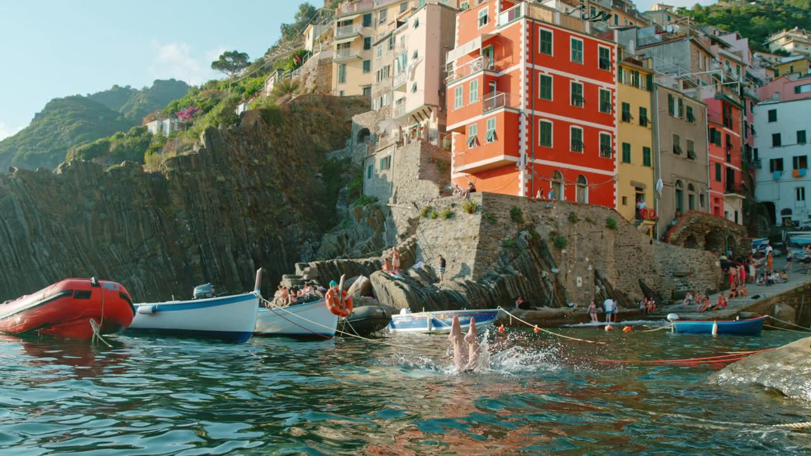

Mare.
Ci si butta quando se ne ha voglia, si risale, si ricomincia. Le Cinque Terre si guardano dal lato giusto: da sotto, con un bicchiere in mano.
Due giorni in catamarano alle Cinque Terre. Niente scarponi, niente sveglia all'alba, nessun rifugio all'orizzonte.
Il manifesto
Ogni anno scegliamo un rifugio, ogni anno ci lamentiamo per tutta la strada, ogni anno lo rifacciamo. Stavolta, per una volta, proviamo il contrario: stessi amici, stessa fame, stesso vino. Solo molti metri più in basso.
| Voce | Giro dei Rifugi | Anti-Giro |
|---|---|---|
| Dislivello | tanto | 0 m |
| Sveglia | all'alba | quando capita |
| Ai piedi | scarponi | niente |
| Sulle spalle | lo zaino | la crema solare |
| Pranzo | panino schiacciato | focaccia fresca |
| Si dorme | in camerata, russano in dodici | in cabina, russano in due |
| Il giorno dopo | polpacci in sciopero | abbronzatura |
Cronache dai rifugi
Frasi pronunciate in salita. Gli autori restano anonimi: si riconosceranno da soli.
passaci sopra con la penna rossa
«Ma chi me lo ha fatto fare? La prossima volta vado al mare.»
Richiesta accolta.
«Andiamo a fare una passeggiata, sarà divertente!»
cit.
Stavolta è vero: da prua a poppa.
«Manca molto?»
cit.
No. Sei già arrivato.
«Quanto manca al parcheggio?»
cit.
Niente parcheggio: si getta l'ancora.
«È qui dietro.»
cit.
Qui dietro c'è il frigo. Davvero.
«Da qui è tutta discesa, giuro.»
cit.
Da qui è tutto mare. Giuro.
«Ancora dieci minuti.»
cit.
Sì, al prossimo tuffo.
«Secondo me era a sinistra.»
cit.
Ora decide lo skipper.
«Lo zaino l'anno scorso pesava meno.»
cit.
Zaino a casa, borsa in cabina.
«Ma il rifugio ce l'ha una strada?»
cit.
Noi ci arriviamo a vela.
La rotta
Partenza e arrivo a La Spezia, facile da raggiungere in treno. Le soste sono una proposta: la rotta la decide il mare, insieme allo skipper.
Dislivello del giorno: 0 m
Chi si imbarca sabato mattina salta il venerdì e forse una sosta. Nessuno se ne accorgerà, tranne chi è arrivato prima.
Dislivello del weekend: 0 m. Dislivello previsto del lunedì in ufficio: enorme.
Le tre cose che contano
Ci si butta quando se ne ha voglia, si risale, si ricomincia. Le Cinque Terre si guardano dal lato giusto: da sotto, con un bicchiere in mano.
Focaccia a colazione, a pranzo e, senza dirlo a nessuno, a metà pomeriggio. Acciughe di Monterosso e Cinque Terre DOC all'aperitivo, cozze della Spezia a cena, uno Sciacchetrà per chiudere.
Pochi metri quadri e nessuna via di fuga: è una caratteristica, non un difetto. Si cucina insieme, si chiacchiera fino a tardi e, per una volta, nessuno chiede quanto manca.

La barca e i conti
Un catamarano con skipper: guida lui, noi ci occupiamo del resto. La barca la scegliamo dopo il 31 dicembre, in base alle risposte.
Per ora è solo una stima: circa 300–450 € a testa per sabato e domenica, con barca, skipper e cassa comune per cibo, gasolio e ormeggi. Il viaggio fino a La Spezia è escluso, e il venerdì costa di più. Il prezzo vero arriverà con i preventivi di gennaio.
Da qui a luglio
Domande frequenti
No. C'è lo skipper. Il tuo compito è non far cadere la focaccia in acqua.
Il catamarano è una delle barche più stabili, ma non fa miracoli. Porta quello che usi di solito e dillo allo skipper: se il mare è mosso, si resta nelle zone più riparate.
Sì. A bordo ci sono i giubbotti salvagente e nessuno è obbligato a buttarsi. Scrivilo nelle note, così ci organizziamo.
In cabine piccole e condivise, con bagni in comune. Più comode di una camerata, meno di casa tua.
Lo skipper cambia rotta e restiamo nel Golfo dei Poeti, tra Portovenere, Lerici e Palmaria. Con mare e vento davvero cattivi, varranno le condizioni dell'operatore: le leggeremo con cura prima di pagare.
Li vedremo dal mare. Per scendere a terra servono boe libere e mare calmo, quindi non possiamo promettere nessuna sosta in particolare.
Non all'ormeggio dentro l'area marina protetta, dove gli impianti audio sono vietati. Fuori se ne parla, e il dibattito sulla playlist è già iniziato.
Una borsa morbida, costume, crema solare, cappello, un maglione per la sera e i documenti. Gli scarponi no: controlliamo.
Per ora è una stima: circa 300–450 € a testa, viaggio escluso. Il prezzo vero arriva a gennaio con i preventivi, e nessuno paga niente prima.
Non è una prenotazione e non paghi nulla. Però i conti li facciamo su questi numeri, quindi rispondi sinceramente: "forse" esiste apposta.
Sì, segnalo nel modulo. I posti dipendono dalla barca, quindi lo confermiamo a gennaio.
Registro di bordo
Un minuto, senza dislivello. Rispondi entro il 31 dicembre 2026.
Anteprima: il modulo non salva ancora nessuna risposta.
Anteprima: questa risposta non è stata salvata.
Hai cambiato idea? Vale l'ultima risposta data con lo stesso nome.
Il registro è chiuso.
Le risposte si sono chiuse il 31 dicembre. Per un ripensamento, scrivilo nella chat del gruppo.